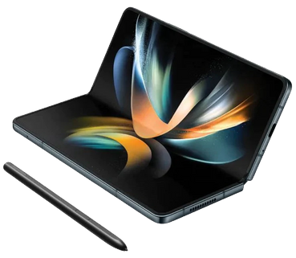

Z-Fold
Lo Z-Fold è molto più di uno smartphone: è un dispositivo che rivoluziona il modo in cui interagiamo con la tecnologia. La sua capacità di trasformarsi da telefono compatto a tablet espansivo lo rende uno strumento versatile e unico nel suo genere...
Lo Z-Fold è molto più di uno smartphone: è un dispositivo che rivoluziona il modo in cui interagiamo con la tecnologia...
Leggi la recensioneL'Orium Smart Ring è il perfetto equilibrio tra tecnologia avanzata e stile sofisticato. Progettato per essere indossato quotidianamente, questo anello intelligente è realizzato con materiali di altissima qualità...
L'Orium Smart Ring è il perfetto equilibrio tra tecnologia avanzata e stile sofisticato...
Leggi la recensioneSmart Ring

Vision Pro

Il Vision Pro non è solo un visore VR: è una porta verso nuovi mondi, un dispositivo in grado di trasformare il tuo modo di lavorare, giocare e connetterti con altre persone. Grazie ai suoi schermi Dual 4K OLED, offre una qualità visiva straordinaria...
Il Vision Pro non è solo un visore VR: è una porta verso nuovi mondi, un dispositivo in grado di...
Leggi la recensione